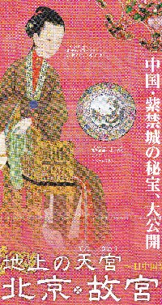
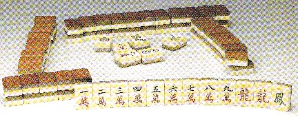

去年の12月、名古屋の某デパートで北京の故宮博物院展があった（東京、大阪と巡回展示）。

台湾の故宮博物館には何度も足を運んだが、北京に行ったことはない。これはこれはと云うので、さっそく出かけた。さすがに目を惹く展示物ばかりであったが、思いがけなくマージャン牌が１セット展示されていた。現在の一般的な日本牌より二回りほど大振り。また
 が龍鳳（いわゆる龍鳳牌）ではあるけれど、それ以外は何の変哲もない牛骨牌。よく見ると、牌身と裏打ちの竹部分にわずかな隙間がある牌も数枚ある。 が龍鳳（いわゆる龍鳳牌）ではあるけれど、それ以外は何の変哲もない牛骨牌。よく見ると、牌身と裏打ちの竹部分にわずかな隙間がある牌も数枚ある。

せっかくの展示物だったが、場内は撮影禁止（カタログからのスキャンなので、写りが悪い(>_<) ）
10年ほど前に法政大学の江橋教授が北京の博物院所蔵に研究のため出かけた。その席で「もし麻雀牌が所蔵されていたら見せてほしい」と要望したところ、１セット出してきてくれた。後日、江橋先生から「どんな牌が出てくるかと思ったが、ごく普通の牛骨牌だった。しかし これしか存在しないという話だった」と聞いた。
そこで（たぶん、これが その牌だろう...しかしヤフオクなんかだと10万円以下で落札できるかも？....）などと思いつつ（もちろんガラスケースの外から見た感じでの感想。為念）、ためつすがめつ眺めていた。すると隣にいた老年夫婦（たぶん）の男性が「なんだ この牌、、 が無いぞ」と連れの婦人につぶやいた。 が無いぞ」と連れの婦人につぶやいた。
聞こえてしまったので 反射的に、「いや あの龍とか鳳がの代わりなんですよ」と返事した。すると続いて、「じゃあ というのは、最近できたんですか」 行きがかり上 一言三言 説明しかけたが、なんだか周りに人が寄ってくる気配がした。そこで後半は口の中でむにゃむにゃ云って、その場を後にした。(^-^；)
|